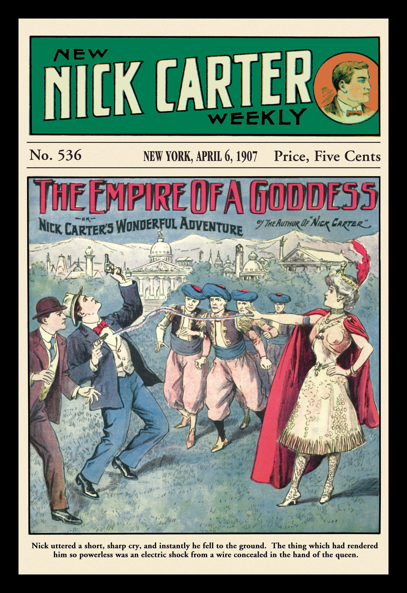
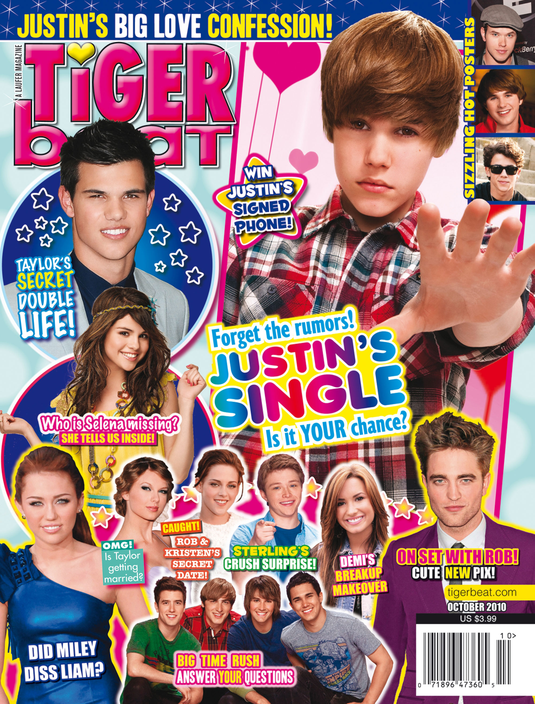

Although magazines’ great contributions to the development of culture and popular trends are today widely acknowledged, the industry has not always been influential. Because of the significant costs associated with printing and mailing publications, magazines originally reached out only to regional audiences. Not until these expenses declined and advertising revenues increased were magazines able to justify the cost of mass circulation.
The late 19th century brought with it an increase in mass circulation for the U.S. magazine industry. This meant that magazines that had once targeted only a small part of the country suddenly began reaching a nationwide audience. In addition to the obvious benefit of increased magazine revenue, this shift to broad circulation caused an interesting phenomenon: the introduction of national trends. For the first time in U.S. history, mass circulation allowed news, stories, consumer goods, and fashions to be diffused and advertised to widespread, rather than regional, audiences. Mass circulation of magazines united the country as geographically diverse consumers read the same stories and saw the same advertisements.
Due to this growth in readership, advertisements became increasingly vital to the magazine industry. Advertisers sought to reach a large audience, and magazines willingly afforded them that opportunity, selling advertising space at higher rates. One business manager of Scribner’s Monthly, an early popular magazine, solicited advertisements by discussing the readership boom:
The publishers of Scribner’s Monthly will insert in each number of the magazine certain pages devoted to advertisements of a character likely to interest magazine readers. These will not increase the postage, while they will add materially to the ability of the publishers to render their magazines readable and attractive. The press of advertisements upon our first number shows how quickly the claims of the new monthly upon the business public are recognized. Our edition will be very large, and it will have a national circulation. It is now well understood that a first-class popular magazine furnishes to all men who seek a national market the very best medium for advertising that exists.Richard Ohmann, Selling Culture: Magazines, Markets, and Class at the Turn of the Century (New York: Verso, 1996), 26.
That national market was an entirely new one for publishers and advertisers. By the 1930s, market research had become the norm for periodicals as magazines—and advertisers—worked to better understand what readers wanted in their publications. However, market research has its limits; many publishers instead embraced the potential of magazines to simply tell people what they want or need, thus solidifying the role of the magazine as a driver of popular culture. As one editor of Vogue articulated, “If we find out what people want, it’s already too late.”Encyclopaedia Britannica, s.v. “History of Publishing,” http://www.britannica.com/EBchecked/topic/482597/publishing/28679/Magazine-publishing.
Magazines offered a place not only for advertisers but also for authors and poets to reach a large audience. Several publications regularly hired both new and established authors to write stories. As circulation increased, so did the desire for these authors to publish their work.
Literary magazinesA magazine that specializes in the publication of fictional stories. enjoyed a boom during the 19th century, publishing some of the period’s most important fiction. At one point or another, nearly every important American writer contributed to literary magazines; for example, Edgar Allan Poe, Mark Twain, Walt Whitman, and Ernest Hemingway all published in periodicals throughout their careers. Even writers working outside the country such as Ezra Pound and James Joyce sought out U.S. magazines to publish works that had been banned elsewhere.
Just as magazines offered authors a chance to display their writing to a large audience, they also allowed readers a taste of available literature. Even today, magazines print portions of books, which give readers a preview of the complete text. Portions of literary classics including Uncle Tom’s Cabin, Walden, Moby-Dick, Tom Sawyer, Huckleberry Finn, and Ulysses all made their debuts in magazines. Some novels—such as Edgar Rice Burroughs’s Tarzan of the Apes, John Hersey’s Hiroshima, and Ernest Hemingway’s The Old Man and the Sea—even appeared in magazines in full before being published in book form. The opportunity to publish in magazines has been invaluable for authors, but literary publications have also proved essential for the development of American culture. In publishing literary texts, journals have promoted now-classic stories, like the previously mentioned examples, that have defined American literary history and have shaped the U.S. story.
During the late 1800s, a new type of magazine was established: the pulp magazineA publication that specializes in genre-fiction stories., an all-fiction publication named for its rough wood-pulp paper. At the time, dime novels did not qualify for the same inexpensive postal rates that magazines did—but the pulps did. Suddenly, individuals had the opportunity to read popular genre fiction in these cheap magazines, like Adventure, Horror Stories, Startling Stories, and Weird Tales.
Figure 5.4
Although pulp magazines first began publishing in 1896, they truly gained popularity during the early 20th century.
Source: Used with permission from Getty Images.
Commonly acknowledged to be the invention of Frank Munsey, the pulps got their start as adventure magazines, but they eventually diverged into several categories such as love, detective, and western. The fiction stories did remarkably well until the mid-1930s, when newspaper comics first offered competition by printing collections on the same pulp paper. In 1937, however, the two genres collided with Detective Comics (where Batman made his first appearance), and the industry experienced a major boom. Although intended for children, the violent, horror-soaked comics drew a large adult audience. However, the graphic content of the pulp strips caused a stir, with the public divided on the nature of this new media. Defenders of the comics called them harmless, while critics thought they would provoke people to mimic the violent subject matter.Encyclopaedia Britannica, s.v. “History of Publishing,” http://www.britannica.com/EBchecked/topic/482597/publishing/28679/Magazine-publishing. Just as legislators struggle today with debates over censorship of television, music, and the Internet, they did so with pulp comics as well. Negative backlash against pulp comics was encouraged through several articles published by child psychologist Fredric Wertham, who alleged that comics were leading children into lives of crime.Jamie Coville, “The Comic Book Villain, Dr. Fredric Wertham, M.D.,” Seduction of the Innocents and the Attack on Comic Books, http://www.psu.edu/dept/inart10_110/inart10/cmbk4cca.html. In response to the controversy, an industry group known as the Association of Comics Magazine Publishers established a Publishers Code in 1948 with the aim of regulating the content of pulp comics. The Publishers Code was not well enforced, however; many publishers choose to ignore the code, and thus the controversy continued to rage. When Senate hearings raised the threat of government regulation in 1954, the pulp comics industry opted for self-censorship, and as a result the much stricter Comics Code Authority was established to control what material reached consumers.
In spite of the controversy surrounding the magazines, the industry flourished, and eventually new forms of pulp magazines emerged. Amazing Stories offered science fiction, and hand-drawn pinups filled so-called Girlie Pulps, which found an audience despite experiencing a setback in 1934 when police seized 10,000 copies and burned them. Even though both new genres attracted outcry from the public for their indecency, the pulps continued to grow in popularity. Many have argued that the difficulties of the Great Depression and the uncertainty of a looming world war made 1930s audiences ripe for the entertainment offered by fictional heroes, giving the pulp genre a ready audience.
The success of the pulps encouraged another major transformation in mainstream journalism: the rise of entertaining fan magazinesA publication that provides audiences with a behind-the-scenes look at the entertainment industry.. Typically focused on television, film, and music, fan magazines emerged as national entertainment during the early 20th century. During the early years of motion pictures, magazines such as Photoplay, Picture Play, Movie Mirror, and Movieland began publication, offering subscribers behind-the-scenes glimpses of well-known films. These periodicals were so successful that, as radio and television became popular, similar magazines came into existence to cover these new media. Television- and radio-focused magazines also provided weekly timetables of programs for their viewers and listeners. Although the emphasis of the fan magazine has changed over the years, even today much of the magazine industry is dominated by entertainment publications, like Entertainment Weekly, Rolling Stone, and TV Guide. In addition to providing entertainment news to readers, these publications are also useful to celebrities and media producers as a platform to market their new products.
During the 1940s, many publishers began pursuing teenagers, a previously ignored demographic. Seventeen magazine hit shelves in 1944, setting the stage for later publications such as Tiger Beat and Teen People. These magazines targeted young women, offering stories on fashion, makeup, celebrity news, and lifestyles. Since their beginnings, teen magazines have kept their articles relatively brief, instead reaching their target audiences with bright and bold photos. Tiger Beat, for example, is known for its collaged covers featuring a popular teen celebrity of the moment. Teen magazines influence popular culture not only through their reporting on celebrities, but also through their articles on celebrity fashion, which readers use to adopt fashion trends worn by celebrities. Like entertainment magazines, teen magazines are also useful marketing tools for celebrities and other media producers.
During their early years, most teen magazines sought out readers in their late teens, even offering articles on colleges. Today, however, to reach a wider audience, these same magazines intentionally target the preteen market by featuring younger actors and including more teenage celebrity gossip. In doing so, the magazine industry continues to influence younger and younger audiences, thus making a greater impact on American popular culture.
Figure 5.5
First popularized during the 1940s, teen magazines today target both tween and teenage audiences, bringing popular culture to the young.
In 2006, the Madrid fashion show made headlines by banning overly thin models to project an image of beauty and health. According to fashion show organizers, “models had to be within a healthy weight range. That means a 5-foot-9 woman would need to be at least 125 pounds.”Nanci Hellmich, “Do Thin Models Warp Girls’ Body Image?” USA Today, September 26, 2006, http://www.usatoday.com/news/health/2006-09-25-thin-models_x.htm. The debate over thin models has been around since the 1960s when model Twiggy entered the field. Since then, extremely thin models have ruled the runway despite claims to the contrary: Most American runway models measure within an inch or two of 6 feet tall, but weigh between just 120 and 124 pounds. With images of these models everywhere, many are growing concerned about their effect on American youths, especially teen girls.
Studies have shown that images of ultra-thin models distort women’s views of health and beauty, leading to depression, extreme dieting, and eating disorders. In one study, 69 percent of girls said that fashion models influence their idea of the perfect body shape, despite the fact that most models weigh 23 percent less than the average female.Healthy Place, “Eating Disorders: Body Image and Advertising,” December 11, 2008, http://www.healthyplace.com/eating-disorders/main/eating-disorders-body-image-and-advertising/menu-id-58/. Another study showed that 68 percent of Stanford University undergraduate and graduate students felt worse about themselves after looking through a women’s magazine.Healthy Place, “Eating Disorders: Body Image and Advertising,” December 11, 2008, http://www.healthyplace.com/eating-disorders/main/eating-disorders-body-image-and-advertising/menu-id-58/. Even more worrisome is the fact that young girls are being negatively affected by magazine images. “The number one wish for girls 11 to 17 is to be thinner, and girls as young as 5 have expressed fears of getting fat. Eighty percent of 10-year-old girls have dieted.”Healthy Place, “Eating Disorders: Body Image and Advertising,” December 11, 2008, http://www.healthyplace.com/eating-disorders/main/eating-disorders-body-image-and-advertising/menu-id-58/.
Some companies are fighting the trend of using super-thin models in their advertising. In 2004, Dove launched its Dove Campaign for Real Beauty; the company claims the goal of the ad campaign is to “help free ourselves and the next generation from beauty stereotypes.”Dove, “Campaign for Real Beauty,” http://www.dove.us/#/cfrb/about_cfrb.aspx. Dove’s ads feature women of many shapes, sizes, and ethnicities in little more than their undergarments. Dove has stated that it plans to continue using “real women” in marketing campaigns.Sophia Morrell, “Is the Use of Eating-Disorder Sufferers in Dove’s Ad Campaign an Act of Desperation?” Marketing Week, August 16, 2007, http://www.marketingweek.co.uk/analysis/is-the-use-of-eating-disorder-sufferers-in-doves-ad-campaign-an-act-of-desperation?/2057515.article.
Celebrity gossip is not just reserved for teen audiences. A stroll through a supermarket checkout lane reveals the vast assortment of celebrity magazinesA publication that provides an inside look into the lives of popular celebrities.—also known as gossip magazines—that target adults. First popularized during the 1970s, these celebrity magazines offer readers an inside perspective on the lives of the famous. Many magazines publish gossip stories that humanize celebrities by featuring them in a negative light. Despite the best efforts of celebrities and their agents, placement in these magazines can make or break celebrities’ reputations and foster much drama within the celebrity community. Because of intense competition for stories, celebrity magazines may pay large sums of money to celebrities or other sources for exclusive stories and photos. Celebrity magazines will be discussed in detail later in this chapter.
Look through a teen magazine like Seventeen or CosmoGIRL! and examine the models present in them. Then, answer the following writing prompts.